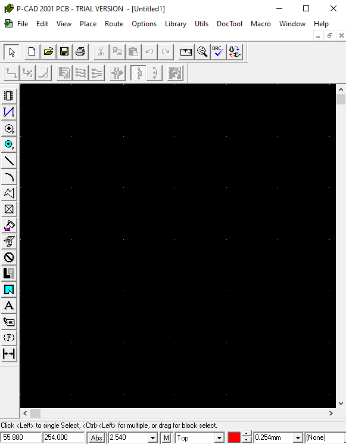

Что такое САПР P-CAD
P-CAD — система автоматизированного проектирования электроники (EDA) предназначенная для проектирования многослойных печатных плат вычислительных и радиоэлектронных устройств.
В состав P-CAD входят два основных модуля — P-CAD Schematic (графический редактор принципиальных электрических схем) и P-CAD PCB (графический редактор печатных плат), а также ряд других вспомогательных программ.
Некоторые возможности программы:
─ интерактивное размещение элементов и автотрассировка проводников;
─ поиск ошибок на любой стадии проекта;
─ подготовка документации;
─ проверка целостности всех сигналов;
─ анализ перекрёстных искажений.
Интерфейс программы выглядит следующим образом:
Symbol Editor
Первая программа, в которой предстоит начать работу - Symbol Editor.
Symbol Editor - эта программа предназначена для создания УГО(условно графическое обозначение) радиоэлементов. Также в этой программе создаются и сохраняются библиотеки с вашими радиоэлементами для дальнейшего более быстрого их использования.
Pattern Editor
Следующая программа - Pattern Editor.
Pattern Editor - программа предназначенная для создания или копирования посадочного места элемента из уже созданной или предзагруженной библиотеки.
Library Executive
Далее идёт - Library Executive.
Library Executive - данная программа предназначенная для выставления электрических типов "ножек" элемента.
А также можно увидеть выбранное ранее посадочное место и изменить то, какой будет префикс у элемента, и какая будет нумерация элемент на схеме - буквами или цифрами.
Schematic
Следующая программа - Schematic.
Schematic - эта программа необходима для того, чтобы собрать всю схему целиком из созданных ранее библиотек.
После добавления всех нужных библиотек и сбора цельной схемы её можно проверить на ошибки, а также создать список соединений, который впоследствии понадобится для компановки и трассировки печатной платы.
PCB
Следующая программа - PCB.
PCB - эта программа служит для компановки и трассировки печтаной плат, в неё можно загрузить созданный ранее список соединений, предварительно загрузив все необходимые библиотеки.
Для правильной трассировки печатной платы необходимо выполнить правильную компановку, которая строится из следующих правил:
─ минимальная средняя длина проводника;
─ минимальное количество пересечений проводников;
─ равномерное размещение элементов;
─ оптимальное размещение внешних выводов с края печатной платы;
─ проводники не должны накладываться друг на друга;
─ компоненты не должны накладываться друг на друга;
─ оптимальный размер печатной платы.
После правильной компановки можно трассировать печатную плату, а псоле выводить на печать